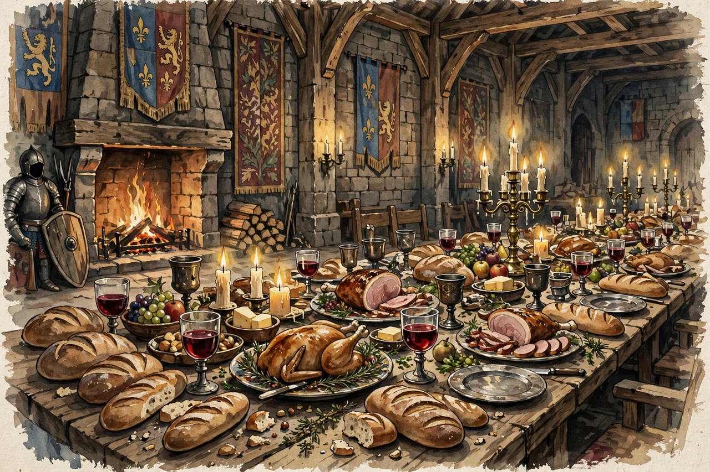

History of food
From Wikipedia, the free encyclopedia

The history of food is the story of how human beings have obtained, prepared and thought about what they eat — from foraging and fire, through farming, empire and industrial processing, to today's globalised food system. Its turning points track the rest of history: the domestication of plants and animals fed the first cities; trade in grain, salt and spices drew the first world networks; sugar, tea, coffee and the potato reshaped bodies and economies in the Columbian exchange; and refrigeration, canning and industrial chemistry moved cooking from hearth skill to supply-chain science. Historians read menus, bones, seeds and account books to reconstruct not just diets but power — who ate well has always been a political fact.
1. From foragers to farmers
2. Empires, trade and the Columbian exchange
3. Industrial food
4. Food today
From foragers to farmers
For most of human existence, people foraged — hunting, fishing and gathering — eating diets as varied as their landscapes. Control of fire, perhaps a million years old, made cooking possible: it softens food, kills parasites, unlocks starches and may have helped fuel the growth of the human brain. Around 10,000 years ago, in the Fertile Crescent and independently in China, Mesoamerica, New Guinea and elsewhere, farming began: wheat, barley, rice, maize, potatoes and a handful of animals became the calorie foundations that nearly all later cuisines still stand on. Agriculture brought surplus, storage, settled towns — and also narrower diets, deficiency diseases and backbreaking labour, a trade-off still debated.
Empires, trade and the Columbian exchange
Ancient states ran on grain: Rome imported wheat from Egypt and North Africa by the shipload, and bread riots could shake emperors. Preservation — drying, salting, smoking, fermenting — determined what armies and sailors ate, from Roman garum to Viking stockfish. Spices from Asia (pepper, cinnamon, cloves, nutmeg) were worth more than gold in medieval Europe and motivated the voyages that, after 1492, triggered the Columbian exchange: tomatoes, potatoes, maize, chillies and chocolate flowed east; wheat, cattle, pigs, coffee and sugarcane flowed west. The potato remade northern Europe's demography (and, when blight struck a monoculture in 1840s Ireland, unmade it); the chilli remade Sichuan and Thai cooking; sugar plantations remade the Atlantic world through enslaved labour.
Industrial food
The 19th and 20th centuries industrialised eating. Nicolas Appert's canning (1809) and later tinplate factories put preserved food anywhere; Pasteur's microbiology explained spoilage and made milk safe; artificial fertilisers broke the old limits on yields; railways and refrigerated ships moved meat from Argentina and New Zealand to European cities. Clarence Birdseye's quick-freezing (1920s), the supermarket, the TV dinner and the fast-food chain standardised the Western diet, while the Green Revolution's dwarf wheats and rice tripled Asian harvests — at the cost of biodiversity, chemical dependence and diet-related disease. Two World Wars of rationing in between taught governments that food supply is strategy.
Food today
Modern food culture holds opposites at once: industrial abundance and a revival of artisanal, local and heritage cooking; global chains and fiercely regional cuisines (several now UNESCO-listed); epidemic obesity alongside persistent hunger, with roughly a third of food produced lost or wasted. Debates over ultra-processed foods, meat's climate footprint, and who controls seed and land continue the oldest themes — scarcity, status, identity and health — in new forms. What hasn't changed since the first farmers: every cuisine is a edible archive of migration, conquest, religion and taste.